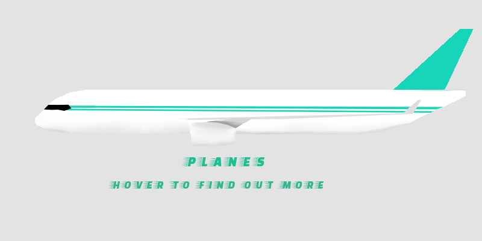
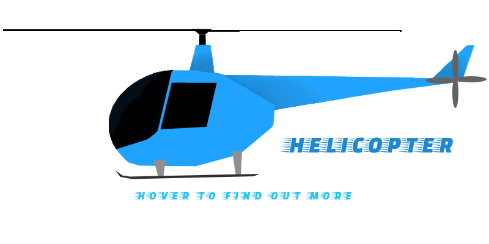

<!DOCTYPE html>
<html>


<head>
    <link rel="icon" type="image/ico" href="favicon.png" />
    <title>A I R</title>
    <meta charset="utf-8">
    <meta content="width=device-width, initial-scale=1" name="viewport">
    <link href="http://maxcdn.bootstrapcdn.com/bootstrap/3.3.6/css/bootstrap.min.css" rel="stylesheet">
    <script
<body>

    <nav class="nav navbar-inverse">
        <div class=".navbar-header">
            <button class="navbar-toggle" data-target="#myNavbar" data-toggle="collapse" type="button"><span class="icon-bar"></span>
                <span class="icon-bar"></span> <span class="icon-bar"></span></button>
        </div>
        <div class="collapse navbar-collapse" id="myNavbar">
            <ul class="nav navbar-nav">
                <li>
                    <a href="2016index.html">H O M E</a>
                </li>
                <li class="active">
                    <a href="2016air.html">A I R</a>
                </li>
                <li>
                    <a href="2016land.html">L A N D</a>
                </li>
                <li>
                    <a href="2016sea.html">S E A</a>
                </li>
            </ul>
        </div>
    </nav>
    <div>
        <a href="2016index.html"><h1>LEARN YOUR</h1>
        <h2>AIR VEHICLES</h2></a>
    </div>

    <div class="container-fluid">
        <div class="row">
            <div class="col-sm-12 hover">
                <div id="wrapper">
                    
                    <h3 class="text"><span>Plane Fun Facts</span></h3>
                    <p class="text"><span>  <br>1 - The engines provide the trust to make the plane move forward. It also helps the wings to create lift making the plane go up.
                        <br>
                        <br>2 - The body of the plane (where the passengers sit) is called a fuselage.
                        <br>
                        <br>3 - A Boeing 747 can carry about 60,000 gallons of jet fuel, which weighs about 400,000 pounds.
                        <br>
                        <br>4 - The world’s fastest plane in the world is the SR-71 Blackbird, it can go up to 3,530 kph!
                        <br>
                        <br>5 - The Wright Brothers built the first plane that flew in 1903!</span></p>
                </div>
            </div>
        </div>
        <div class="row">
            <div class="col-sm-12 hover ">
                <div id="wrapper">
                    
                    <h3 class="text"><span>Helicopter Fun Facts</span></h3>
                    <p class="text"><span> <br><br>1 - Helicopter’s are capable of taking off and landing vertically, because they hover. <br><br>2 - The thrust is delivered by spinning rotors, usually one or two blades. <br><br>3 - They have one main rotor and a smaller rotor at the back.<br><BR>4 - They are used in search and rescue, tourism, medical transport, fighting fire, photography, military and much more!<br><br>5 - They are very noisey, vibrate a lot, and are much slower than airplanes.</span></p>
                </div>
            </div>
        </div>

    </div>
    <div class="row ">
        
        <div class="col-sm-12 height">

        </div>

    </div>
    <footer class="footer">
        <div class="container">
            <h4 class="text-muted">© JORDEN YOUNG 2016</h4>
        </div>
        <a id="back-to-top" href="#" class="btn btn-primary btn-lg back-to-top" role="button" title="Back to Top" data-toggle="tooltip" data-placement="top">
            <span class="glyphicon glyphicon-chevron-up"></span></a>
    </footer>
</body>

</html>
